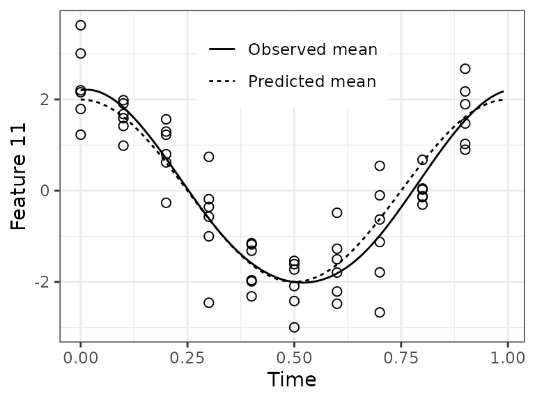
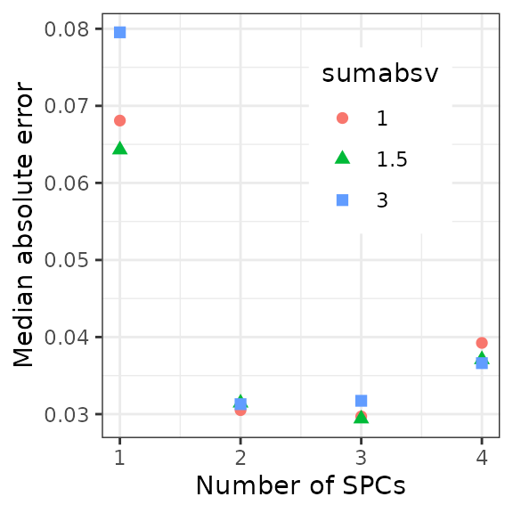

ZeitZeiger is a method for supervised learning on high-dimensional data from an oscillatory system. This vignette goes through an example of how to use ZeitZeiger to train and test a predictor, perform cross-validation, and plot the results.
Load the necessary packages
First let’s load the necessary packages.
library('data.table')
library('ggplot2')
library('zeitzeiger')
doParallel::registerDoParallel(cores = 2) # register a parallel backend to minimize runtimeGenerate example data
Now we’ll simulate data from an oscillatory system. Our simulated data will have 100 observations, with measurements of 200 features and 10 time-points per period. Each feature will have Gaussian noise. We’ll call the periodic variable here “time,” which will go between 0 and 1.
nObs = 100
nFeatures = 200
amp = 0.5
time = rep((0:9) / 10, length.out = nObs)
set.seed(42)
x = matrix(rnorm(nObs * nFeatures, sd = 0.7), nrow = nObs)The oscillator will produce three patterns: a sine, a cosine, and a cosine with twice the frequency. For each of the three patterns, two features will have relatively strong signal and eight more will have relatively weak signal.
baseSignal = sin(time * 2 * pi)
x[, 1] = x[, 1] + 3 * baseSignal
x[, 2] = x[, 2] - 0.5 * baseSignal
for (ii in 3:10) {
x[, ii] = x[, ii] + runif(1, -amp, amp) * baseSignal}
baseSignal = cos(time * 2 * pi)
x[, 11] = x[, 11] + 2 * baseSignal
x[, 12] = x[, 12] - baseSignal
for (ii in 13:20) {
x[, ii] = x[, ii] + runif(1, -amp, amp) * baseSignal}
baseSignal = cos(time * 4 * pi + pi / 6)
x[, 21] = x[, 21] + baseSignal
x[, 22] = x[, 22] - baseSignal
for (ii in 23:30) {
x[, ii] = x[, ii] + runif(1, -amp, amp) * baseSignal}Create training and testing observations
Now we’ll split the dataset into training and test sets.
idxTrain = 1:round(nObs * 0.6)
xTrain = x[idxTrain, ]
timeTrain = time[idxTrain]
xTest = x[-idxTrain, ]
timeTest = time[-idxTrain]Train and test a ZeitZeiger predictor
ZeitZeiger has three main steps: zeitzeigerFit,
zeitzeigerSpc, and zeitzeigerPredict. Each
function has several options, please see the help and Hughey et al. (2016) for
more details. The preferred way to use them is to call each function
separately. This lets you change the parameters for a later step without
re-running the earlier steps.
zeitzeigerFit uses the training data to fit a periodic
smoothing spline to the behavior of each feature as a function of time.
zeitzeigerSpc then uses the spline fits to calculate sparse
principal components (SPCs) for how the features change over time.
zeitzeigerPredict then uses the training data and the SPCs
to predict the corresponding time for each test observation. The two
main parameters of ZeitZeiger are sumabsv, which controls
the amount of regularization, and nSPC, which controls how
many SPCs are used for prediction.
fitResult = zeitzeigerFit(xTrain, timeTrain)
spcResult = zeitzeigerSpc(fitResult$xFitMean, fitResult$xFitResid, sumabsv = 1)
predResult = zeitzeigerPredict(xTrain, timeTrain, xTest, spcResult, nSpc = 2)Alternatively, you can run all three steps in one go using the
zeitzeiger function, which returns a list consisting of the
results of the above three functions.
zzFit = zeitzeiger(xTrain, timeTrain, xTest, sumabsv = 1, nSpc = 2)Plot the periodic spline fits
Before looking at the predictions, it’s a good idea to check the quality of the spline fits.
timeRange = seq(0, 1 - 0.01, 0.01)
jj = 11
df1 = data.table(timeTrain, xTrain = xTrain[, jj])
df2 = data.table(
timeRange = rep(timeRange, 2),
parameter = rep(c('Observed mean', 'Predicted mean'), each = length(timeRange)),
value = c(predictIntensity(fitResult$xFitMean[jj, , drop = FALSE], timeRange),
2 * cos(timeRange * 2 * pi)))For feature 11, the fit looks good. In a real-world dataset, we wouldn’t know the observed mean, so we could only compare the predicted mean to the observations.
ggplot() +
geom_point(aes(x = timeTrain, y = xTrain), data = df1, shape = 1, size = 2) +
geom_line(aes(x = timeRange, y = value, linetype = parameter), data = df2) +
labs(x = 'Time', y = sprintf('Feature %d', jj)) +
theme_bw() + theme(legend.position = c(0.5, 0.85), legend.title = element_blank())
Plot prediction error on the test set
We can calculate the difference between predicted time and observed
time, i.e., the error, using getCircDiff. This function
accounts for the fact that time is periodic, so time = 0 is
equivalent to time = 1. The error can range from -0.5 to
0.5.
dfTest = data.frame(
timeObs = timeTest, timePred = predResult$timePred,
timeError = getCircDiff(predResult$timePred, timeTest))There are many ways to examine prediction accuracy. A simple one is
to plot predicted time vs. observed time. Ideally, all points would lie
on the line y = x. These predictions are pretty good. A
couple test observations with an observed time of 0 have a predicted
time slightly less than 1, which is ok.
ggplot(dfTest) +
geom_point(aes(x = timeObs, y = timePred), size = 2, shape = 1) +
geom_abline(slope = 1, intercept = 0, linetype = 'dashed') +
scale_x_continuous(limits = c(0, 1)) + scale_y_continuous(limits = c(0, 1)) +
labs(x = 'Observed time', y = 'Predicted time') + theme_bw()When we plot error vs. observed time, we see those observations have a small negative error.
ggplot(dfTest) +
geom_point(aes(x = timeObs, y = timeError), size = 2, shape = 1) +
scale_x_continuous(limits = c(0, 1)) +
scale_y_continuous(limits = c(-0.2, 0.2)) +
labs(x = 'Observed time', y = 'Error') +
theme_bw()Plot a test observation’s time-dependent likelihood
The predicted time for a test observation is the time with maximum
likelihood. Another output of zeitzeigerPredict, however,
is the likelihood across the entire range of time. By default, this
likelihood is calculated at 100 discrete time-points, the same as
timeRange that we defined earlier (the predicted time is
not restricted to being one of these time-points).
obs = 2
dfLike = data.table(timeRange, likelihood = predResult$timeDepLike[obs, 1, ])
dfVert = data.table(
type = c('Observed time', 'Predicted time'),
xint = c(timeTest[obs], predResult$timePred[obs]))For this observation, notice how the likelihood starts increasing at times slightly less than 1, then continues to increase at times greater than 0.
ggplot(dfLike) +
geom_point(aes(x = timeRange, y = likelihood), size = 2, shape = 1) +
geom_vline(aes(xintercept = xint, linetype = type), data = dfVert,
show.legend = TRUE) +
scale_linetype_manual(values = c('solid', 'dashed')) +
labs(x = 'Time', y = 'Likelihood') + theme_bw() +
theme(legend.position = c(0.7, 0.8), legend.title = element_blank())Run cross-validation
To determine the best parameters for training a ZeitZeiger predictor,
we can run cross-validation. The cross-validation functions can process
the folds in parallel, if registerDoParallel is called
beforehand. Because the three steps of ZeitZeiger are separated, we need
to first randomly assign each observation to a fold, then use the same
assignments for zeitzeigerFitCv and
zeitzeigerPredictCv.
Here we’ll run cross-validation over three values of
sumabsv and four values of nSPC. Typically a
few values of sumabsv will suffice, and nSPC
in this example can only range from 1 to 10 (because 10 is the default
value of nTime).
sumabsv = c(1, 1.5, 3)
nSpc = 1:4
nFolds = 10
foldid = sample(rep(1:nFolds, length.out = nObs))
fitResultList = zeitzeigerFitCv(x, time, foldid)
spcResultList = list()
for (ii in seq_len(length(sumabsv))) {
spcResultList[[ii]] = zeitzeigerSpcCv(fitResultList, sumabsv = sumabsv[ii])}
predResultList = list()
for (ii in seq_len(length(sumabsv))) {
predResultList[[ii]] = zeitzeigerPredictCv(
x, time, foldid, spcResultList[[ii]], nSpc = nSpc)}Plot the error for each set of parameter values
Before plotting, we need to reorganize the output, making a
data.frame with the information for each prediction.
timePredList = lapply(predResultList, function(a) a$timePred)
cvResult = data.table(
do.call(rbind, timePredList),
timeObs = rep(time, length(sumabsv)),
sumabsv = rep(sumabsv, each = length(time)),
obs = rep(1:nObs, length(sumabsv)))
cvResultMelt = melt(
cvResult, id.vars = c('obs', 'timeObs', 'sumabsv'), variable.name = 'nSpc',
value.name = 'timePred', variable.factor = FALSE)
cvResultMelt[, nSpc := as.integer(substr(nSpc, 2, 2))]
cvResultMelt[, sumabsv := factor(sumabsv)]
cvResultMelt[, timeError := getCircDiff(timePred, timeObs)]Now calculate the median absolute error for each set of parameter values.
In this example dataset, the best accuracy seems to be at
sumabsv = 1 and nSpc = 3.
ggplot(cvResultMeltGroup) +
geom_point(aes(x = nSpc, y = medae, shape = sumabsv, color = sumabsv), size = 2) +
labs(x = 'Number of SPCs', y = 'Median absolute error') +
theme_bw() + theme(legend.position = c(0.7, 0.7))
Train a model on the full dataset
Now we can train a predictor on the full dataset using the almost
optimal sumabsv (to keep things interesting) from
cross-validation (all values of nSpc come along for free),
and look at what ZeitZeiger has learned.
fitResultFinal = zeitzeigerFit(x, time)
spcResultFinal = zeitzeigerSpc(
fitResultFinal$xFitMean, fitResultFinal$xFitResid, sumabsv = 1.5)
dfVar = data.table(
spc = seq_len(length(spcResultFinal$d)),
propVar = spcResultFinal$d^2 / sum(spcResultFinal$d^2))Only the first three SPCs explain any appreciable amount of the
variance in how the features change over time. This makes sense, as
accuracy stopped improving or got worse at nSpc = 4.
ggplot(dfVar) +
geom_point(aes(x = spc, y = propVar), size = 2, shape = 1) +
scale_x_continuous(breaks = seq(1, 10)) +
labs(x = 'SPC', y = 'Proportion of\nvariance explained') + theme_bw()Plot the behavior of the SPCs over time
Now we can project the observations from feature-space to SPC-space, to look at how the three SPCs behave over time.
z = x %*% spcResultFinal$v[, 1:3]
colnames(z) = c('SPC 1', 'SPC 2', 'SPC 3')
zMelt = melt(
data.table(z, obs = 1:nObs, Time = time, check.names = FALSE),
id.vars = c('obs', 'Time'), variable.name = 'SPC', value.name = 'Abundance')We see that each SPC corresponds to one of the three signals that we created in the dataset. The signs are reversed, but that’s ok. So these are the patterns that ZeitZeiger was using to predict the time.
ggplot(zMelt) +
facet_grid(vars(SPC), scales = 'free_y') +
geom_point(aes(x = Time, y = Abundance), size = 2, shape = 1) + theme_bw()Plot the coefficients of the features for the SPCs
Finally, we can look at which features contribute to which SPCs.
v = data.frame(spcResultFinal$v[, 1:3])
colnames(v) = c('SPC 1', 'SPC 2', 'SPC 3')
v = v[apply(v, 1, function(r) any(r != 0)), ]
v[v == 0] = NA
v = v[do.call(order, v), ]
v$feature = rownames(v)
vMelt = melt(setDT(v), id.vars = 'feature', variable.name = 'spc',
value.name = 'Coefficient')
vMelt[, feature := factor(feature, rev(v$feature))]Sure enough, ZeitZeiger found all the features with strong signal. In addition, the sign and value of the coefficient for each feature in its respective SPC correspond to what we simulated.
ggplot(vMelt) +
facet_wrap(vars(spc), nrow = 1) +
geom_bar(aes(x = feature, y = Coefficient), stat = 'identity') +
labs(x = 'Feature') + coord_flip() +
theme_bw() + theme(panel.spacing = unit(1.2, 'lines'))
#> Warning: Removed 50 rows containing missing values (`position_stack()`).